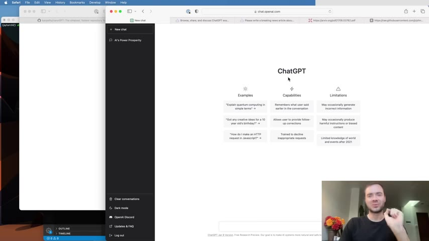
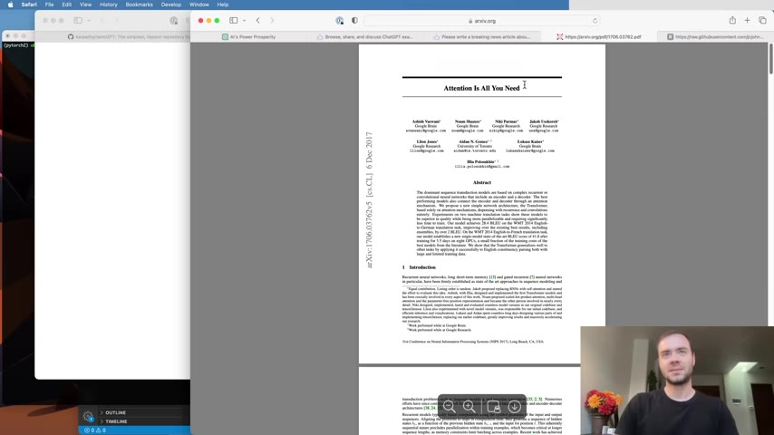
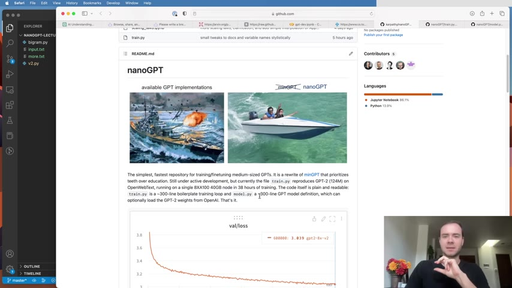
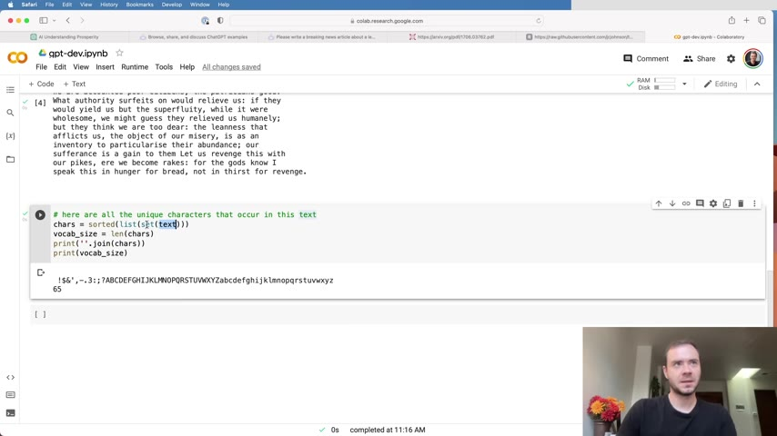
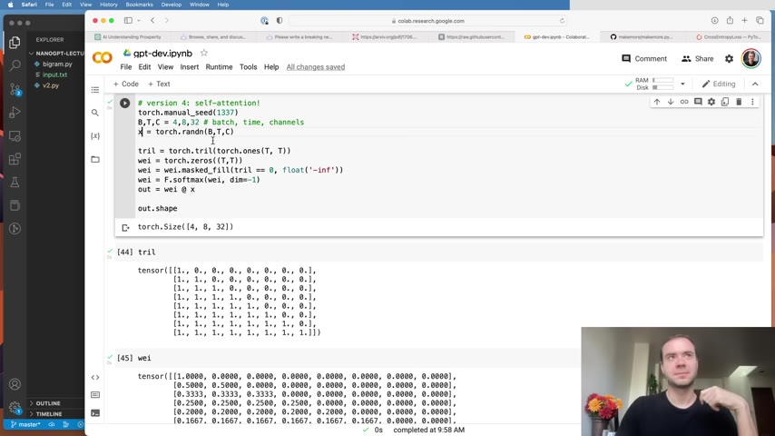
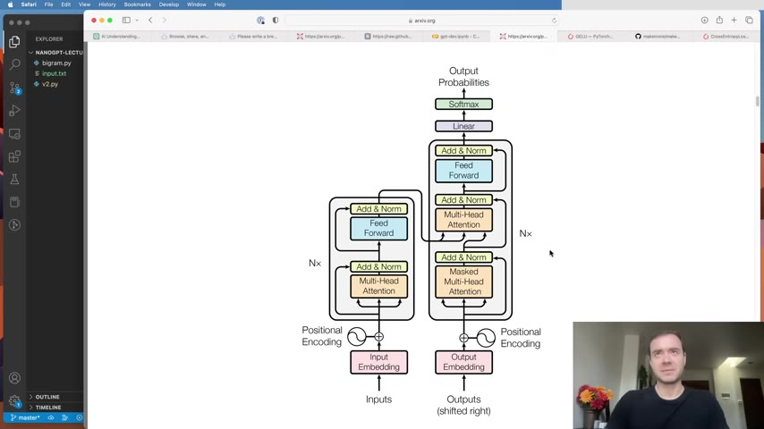
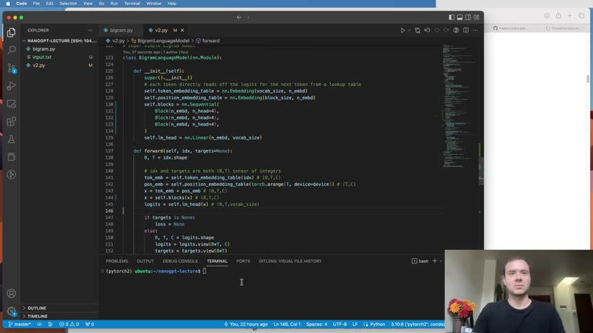
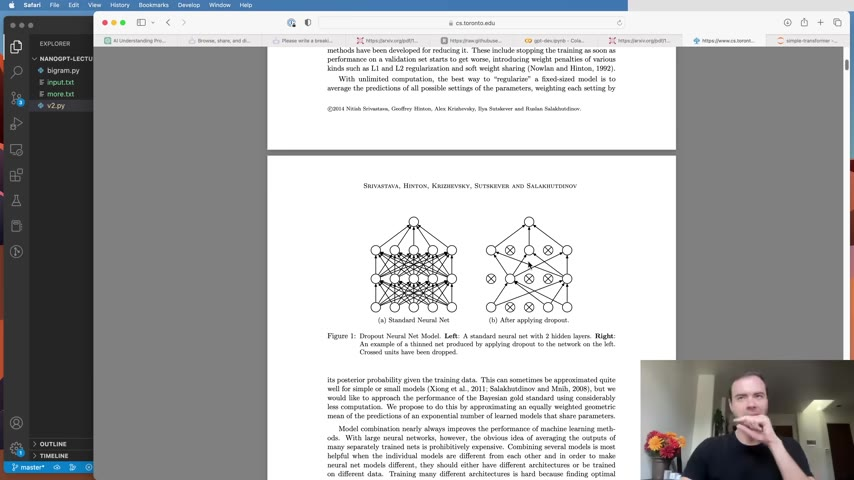
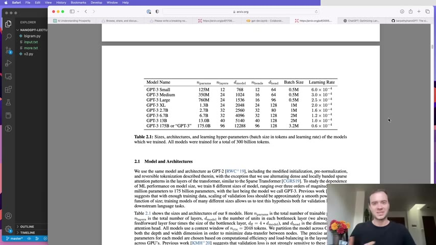

Karpathy takes a blank file and builds a character-level GPT — complete with self-attention, multi-head mechanisms, residual connections, and layer normalization — then trains it on Shakespeare. Every architectural choice is explained through live code in Google Colab.
Watch on YouTubeChatGPT isn't deterministic — it's a language model that models the sequence of characters (or tokens) and completes whatever you give it. Run the same prompt twice and you get slightly different outputs. That randomness is the point: the model has learned the statistics of language and samples from them.

It models the sequence of words or characters — it knows how words follow each other in the English language.— Karpathy
The Transformer architecture emerged in 2017 as a machine translation paper nobody fully anticipated. Its core innovation: replace recurrence with attention. All you need is the attention mechanism — hence the title.

The authors didn't fully anticipate the impact that the Transformer would have on the field. This architecture, with minor changes, was copy-pasted into a huge amount of applications in AI.— Karpathy
nanoGPT is Karpathy's minimalist implementation: two Python files of roughly 300 lines each. One defines the GPT model (the Transformer). The other trains it on any given text dataset. Starting with tiny Shakespeare (~1 MB of text), the goal is character-level generation — one character at a time.

Before the model sees any text, it must be converted to integers. Character-level tokenization maps each unique character to an index — Karpathy's tiny Shakespeare dataset has 65 possible characters (spaces, newlines, uppercase, lowercase, punctuation). This is the simplest possible tokenizer, but it produces very long sequences. Real models like GPT use subword tokenizers (byte-pair encoding via tiktoken) with a vocabulary of ~50K tokens, producing shorter sequences at the cost of a larger codebook.

You can trade off the codebook size and the sequence lengths: very long sequences of integers with very small vocabularies, or short sequences with very large vocabularies.— Karpathy
The model never sees the full text at once. Instead, it trains on random chunks (blocks) of fixed length — Karpathy starts with block size 8, then scales to 256. Each block contains multiple training examples: given the first N characters, predict the (N+1)th. A batch stacks B independent blocks, processed in parallel on the GPU.

We're never going to actually feed the entire text into a Transformer all at once — that would be computationally very expensive and prohibitive.— Karpathy
In a character-level model, tokens don't inherently communicate. Self-attention fixes this: every token emits a query (what am I looking for?), a key (what do I contain?), and a value (what information will I share?). Queries dot-product with keys to produce affinities — learned attention weights — which softmax-normalize into a probability distribution over the past. The model then aggregates values weighted by these affinities.

Attention is a communication mechanism — you can think about it as a communication mechanism where you have a number of nodes in a directed graph, and nodes aggregate information via a weighted sum from all the nodes that point to them.— Karpathy
Instead of one monolithic attention mechanism, multi-head attention runs multiple heads in parallel — each with its own learned projections for Q, K, and V. The heads operate in lower-dimensional subspaces (e.g., 384-dim embeddings / 6 heads = 64-dim per head) and their outputs are concatenated. This lets different heads attend to different kinds of relationships: one might track subject-verb agreement, another might track long-range dependencies.

It's really just multiple attentions running in parallel and concatenating their results.— Karpathy
Each transformer block interleaves two operations: communication (multi-head self-attention) and computation (a position-wise feed-forward network). The feed-forward layer expands the embedding dimension by 4×, applies a ReLU (or GELU in nanoGPT), then projects back. Crucially, both operations use residual connections — the output of each sub-layer is added back to its input. This creates a "gradient super highway" that lets supervision flow unimpeded through deep networks.
Layer normalization normalizes the features at each token position (across the embedding dimension), stabilizing training. Karpathy uses the pre-normalization variant (LayerNorm before each sub-layer) rather than the original paper's post-normalization.

With residual connections and LayerNorm in place, the network becomes trainable at scale. Karpathy increases the model size: 384-dim embeddings, 6 heads, 6 layers, 64 batch size, 256 block size. The validation loss drops from 4.87 → 2.08 → 1.48. The generated text starts to resemble Shakespeare's register — archaic vocabulary and meter — even though it's nonsense.
The same architecture scales to GPT-3: 175 billion parameters (17,500× larger), trained on 300 billion tokens (~1M× more data), across thousands of GPUs. The architecture is "nearly identical" — just bigger.

Between 10,000 and 1 million times bigger depending on how you count. That's all I have for now — go forth and transform.— Karpathy
Pre-training alone gives a document completer — not a chatbot. It completes whatever text you feed it, whether it's a question, a news article, or Shakespeare. To get ChatGPT's behavior requires two additional stages:
nanoGPT focuses on the pre-training stage. If you want the model to perform tasks, be aligned in a specific way, or detect sentiment — anytime you don't want just a document completer — you have to complete further stages of fine-tuning.— Karpathy